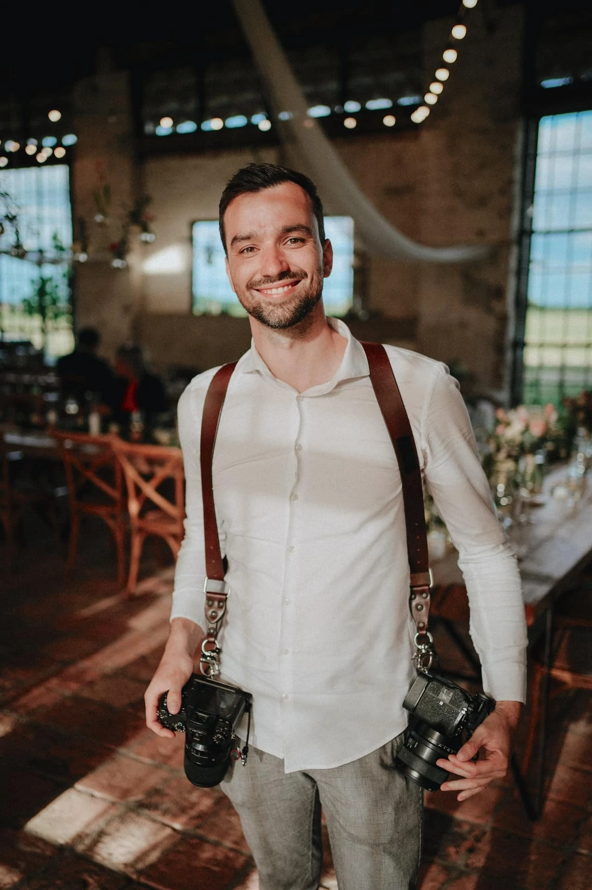

Hi, I'm Marek Topolar — a wedding and family photographer from Brno, Czech Republic. Over the past 10+ years, I've shot more than 200 weddings. And at some point, I realized that static photos alone weren't enough anymore.
During every wedding, I shoot burst sequences — the first kiss, the bouquet toss, the couple walking down the aisle. These moments deserve more than a single frozen frame. They deserve to move.
So I started creating GIFs from my burst photos and adding them to my client galleries on Pic-Time. When clients scroll through their photos and suddenly one of them starts moving — their reaction is always the same: pure joy. It brings the gallery to life.
But here's the thing: making those GIFs was a nightmare.
My old workflow for one GIF:
20-30 clicks per GIF. ~8 minutes each.
Last year, I made 15 GIFs for a single wedding. It took me almost two hours. Just for the GIFs. On top of all the other editing work.
I'm also a developer. So I did what any developer-photographer would do — I wrote a Lightroom plugin that does the entire process in 3 clicks and 10 seconds.
My new workflow with Burst2GIF:
3 clicks. 10 seconds. No Photoshop needed.
Those same 15 GIFs that used to take two hours? Now they take about 10 minutes. And because it's so fast, I actually make more GIFs per gallery — which means a better product for my clients.
After using the plugin on my own weddings for a while, I realized other photographers have the exact same problem. Whether you shoot weddings, families, wildlife, or sports — if you take burst sequences and want to turn them into motion, you're stuck with the same tedious multi-app workflow.
Burst2GIF is my answer to that. One plugin. Three clicks. All your Lightroom edits preserved. No Photoshop, no video editor, no export-import dance.
If you're a photographer who shoots burst sequences and wants to deliver something more than static images — I built this for you.
The free version gives you 10 exports — enough to see if it fits your workflow.
Questions? Reach out at hello@boost.photo